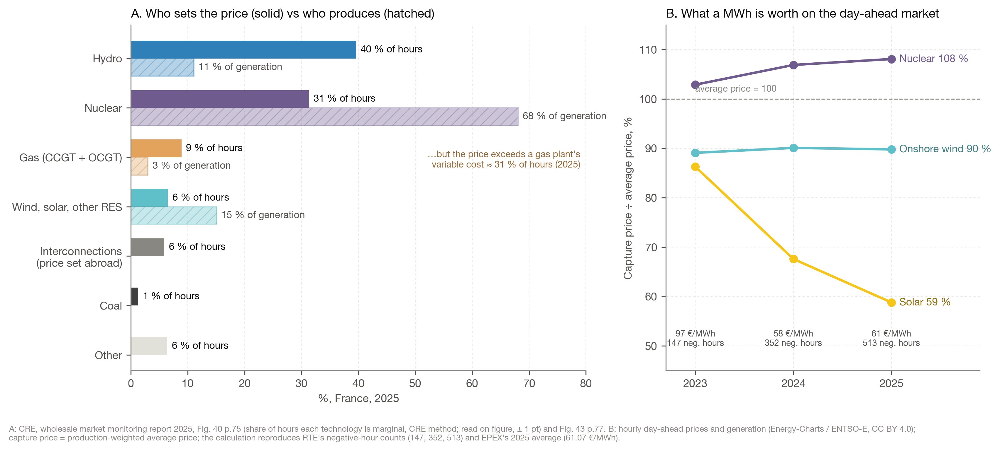

Les marchés de l'électricité : qui achète, où, combien, et à quel prix
Synthèse en 13 sections appuyée sur 70 faits sourcés (MKT-01 à 70), 24 documents CRE/RTE/ACER/Cour des comptes, un historique horaire France + 6 voisins 2019-2025 et deux figures : l'électricité négociée face à l'électricité livrée ; qui fixe le prix, et les facteurs de valeur (prix capté par une filière rapporté au prix moyen). Écrite pour le PESTO 2026, niveau Corps des mines.
Cette note est le compagnon du thème
Economie/Marches_electricite, ouvert le 29/09/2026 pour le
projet d’approfondissement du PESTO 2026 « fixation des prix : flux sur
le marché, impact sur l’industrie, flexibilité, avenir du marché
européen ». Elle s’appuie sur une table de 70 faits sourcés et paginés
(data/faits_marches.md, identifiants MKT-xx), 24 documents
publics archivés dans bibliographie/ (CRE, RTE, ACER, Cour
des comptes, textes européens, EDF), une recherche d’articles
académiques avec Scanlitt
(bibliographie/scanlitt_2026-09-29.md) et le cours «
Fonctionnement du marché » du PESTO (PESTO-3), que les élèves ont suivi.
Elle ne remplace pas le rapport de surveillance de la CRE : elle dit où
regarder et quels pièges éviter.
1. En cinq phrases
- Un MWh échangé n’est pas un MWh livré : en 2025, 1 727 TWh ont été échangés à terme pour une livraison en France, soit 3,9 fois la consommation (446 TWh) ; le day-ahead pèse 139 TWh, l’infrajournalier 28 TWh, l’équilibrage moins de 10 TWh (MKT-16 à 19, 25).
- Jusqu’en 2025, l’essentiel de l’électricité ne passait pas par le marché de gros : sur 421 TWh injectés par EDF, 52 % allaient à ses propres clients et 24 % aux fournisseurs concurrents par l’ARENH à 42 €/MWh ; depuis le 1ᵉʳ janvier 2026, tout est valorisé au prix de marché (MKT-01, 02, 28).
- Le prix est fixé à la marge, et pas toujours par le gaz : en France en 2025, l’hydraulique est marginale 40 % des heures, le nucléaire 31 %, le gaz 9 % — mais le prix dépasse le coût variable d’une centrale à gaz ≈ 31 % des heures, par les imports et par la « valeur d’usage » de l’eau (MKT-42, 43).
- La crise de 2022 a coûté cher, et l’industrie ne s’en est pas remise : mesures de soutien 71,7 Md€ bruts (dont 44 Md€ pour l’électricité), une facture supérieure de 37 Md€ aux coûts de production nationaux selon la Cour des comptes, une consommation des grands industriels encore 13 % sous 2014-2019 (MKT-54 à 56).
- L’avenir est aux contrats longs par-dessus un prix marginal conservé : prix bas et volatils (61 €/MWh en 2025, 509 heures négatives — prix day-ahead horaires ; RTE en compte 513), aucune couverture possible au-delà de trois ans, d’où les contrats CAPN d’EDF ; la réforme européenne garde le prix marginal et impose des contrats pour différence bidirectionnels à tout soutien public nouveau dès le 17/07/2027 (MKT-21, 41, 45, 61).
2. Les marchés, du long terme au temps réel
| Segment | Échéance | Qui y va, pour quoi faire | Volume France 2025 |
|---|---|---|---|
| Contrats longs (CAPN, PPA, CfD, Exeltium) | 10 à 40 ans | industriels et fournisseurs qui veulent un prix stable ; producteurs qui financent un actif | CAPN : 1 800 MW ouverts dès 2027 ; EDF : 47 TWh/an de contrats moyen et long terme fin 2025 |
| Marchés à terme (bourse EEX, gré à gré via courtiers) | de la semaine à Y+3 (quasi rien au-delà) | fournisseurs qui couvrent leurs ventes ; producteurs qui vendent à l’avance ; financiers | 1 727 TWh échangés |
| Day-ahead (enchère couplée européenne, EPEX et Nord Pool) | la veille, pas de 15 minutes depuis le 1/10/2025 | tous ; le prix de référence de toute l’Europe | 139 TWh achetés, 153 vendus |
| Infrajournalier (continu + enchères) | jusqu’à l’heure de livraison | ajustements après prévision météo ; batteries ; algorithmes | 28 TWh |
| Équilibrage (réserves FCR, aFRR, mFRR) | temps réel | RTE ; responsables d’équilibre qui paient leurs écarts | 3,7 TWh activés à la hausse, 5,6 à la baisse |
| Mécanisme de capacité | années | rémunère la disponibilité à la pointe ; centralisé (RTE acheteur unique) dès l’hiver 2026-2027 | 4 401 €/MW pour 2026, au plus bas |
| ARENH (régulé, hors marché) | 2011-2025 | fournisseurs alternatifs, à 42 €/MWh | 125 TWh en 2025, dernier exercice |
Sources : CRE, rapport de surveillance 2025, p. 53, 83-117 ; EDF, présentation CAPN (nov. 2025) et résultats 2025 (MKT-01 à 25). Les élèves retrouveront l’architecture dans le cours PESTO-3 (diapositives 4 à 10) : « les achats se font majoritairement longtemps à l’avance et un peu sur les marchés de court terme ».
3. Qui achète, qui vend

- EDF, acteur intégré, vend d’abord à ses clients : sur 421 TWh injectés en 2025, ≈ 220 TWh (52 %) à ses propres clients, ≈ 100 TWh aux concurrents via l’ARENH (+ 25 TWh pour les pertes des réseaux), ≈ 61 TWh (14,5 %) sur le marché de gros, ≈ 14 TWh à l’export (MKT-28). Le « marché physique » (day-ahead, infrajournalier, blocs de gré à gré) ne fait que 143 TWh, dont ≈ 97 TWh partent à l’export (MKT-29).
- Les ménages restent au tarif réglementé : 19,4 millions de sites résidentiels aux TRVE sur 35,1 (55 %) ; les fournisseurs alternatifs vendent 30 % des volumes résidentiels et 56 % des volumes non résidentiels (MKT-32).
- Les gros industriels pèsent lourd : 0,3 % des sites consomment 45 % de l’électricité ; les sites raccordés au réseau de transport font 44 % de la consommation industrielle (MKT-33).
- Qui porte le risque de prix : les ventes à terme sont surtout portées par les producteurs intégrés ; sur les échéances lointaines (Cal-2029), par des financiers. Le marché est concentré côté vente (indice HHI du day-ahead : 2 548) (MKT-30, 35).
4. Comment se forme le prix
L’ordre de mérite. Chaque heure, les offres de production sont classées par coût variable croissant ; la dernière nécessaire fixe le prix pour tous (tarification marginale, « pay-as-clear »). Les renouvelables et le nucléaire, à coût variable faible, touchent la différence : c’est la rente inframarginale qui rembourse leur investissement (voir le groupe financement).

- La France est devenue moins chère que ses voisins : day-ahead 2025 à 61 €/MWh contre 89 en Allemagne et 116 en Italie ; contrat à un an (Y+1) à 60,9 contre 87,4 en Allemagne. Prix français strictement inférieur à l’allemand 69 % du temps (MKT-41, 49, 53).
- Le gaz influence le prix bien plus souvent qu’il n’est marginal : 9 % des heures en 2025, mais le prix dépasse son coût variable ≈ 31 % des heures (54 % en 2023). L’hydraulique de barrage est offerte à sa valeur d’usage, souvent proche du coût du gaz. Dans l’UE en 2022, le gaz a fixé le prix 63 % du temps pour 20 % du mix (Draghi citant le JRC, secondaire) (MKT-42 à 44).
- Plus de volatilité : 509 heures à prix négatif en 2025 (prix day-ahead horaires ; RTE en compte 513), contre 147 en 2023, mais peu profondes (−6,5 €/MWh en moyenne) ; 1 807 heures au-dessus de 100 €/MWh. Le solaire ne capte plus que 59 % du prix moyen (86 % en 2023) ; le nucléaire, qui module, capte 108 % (MKT-45 à 48, calcul de ce thème). C’est la « cannibalisation » : plus une filière variable est présente, moins chaque MWh qu’elle produit vaut (Hirth 2013). Sur 2019-2025 (production éCO2mix), le taux de capture du solaire passe de 95 % à 56 % (59 % avec la production d’Energy-Charts : la source de production compte) ; l’hydraulique, qui produit aux heures chères, capte 122 % en 2025 ; la France est moins chère que l’Allemagne 1 802 heures en 2019 et 6 063 heures en 2025.
5. Du prix de gros à la facture
| Ménages 2025 (TTC) | Entreprises 2025 (HTVA) | Grands sites > 150 GWh/an | |
|---|---|---|---|
| Total | 254,6 €/MWh | 148,8 €/MWh | 65,3 €/MWh |
| Fourniture (énergie) | 107,5 | 96,0 | — |
| Réseaux (TURPE) | 71,7 | 34,8 | — |
| Taxes | 36,2 + TVA 39,2 | 18,1 | accise plafonnée à 0,5 €/MWh pour les électro-intensifs |
Sources : SDES, Prix de l’électricité en France et dans l’UE en 2025 (MKT-36 à 38). La France est 13 % sous la moyenne de l’UE pour les ménages et 15,6 % pour les entreprises. Le TRVE depuis 2026 : l’énergie est achetée comme un ruban base et pointe lissé sur les 24 mois précédant l’année de livraison — d’où 63,9 €/MWh pour 2026 contre 103 €/MWh pour 2025, et le retard avec lequel les prix de gros arrivent sur les factures (MKT-15). Écart transatlantique : l’industrie paie 151 €/MWh dans l’UE contre 74 aux États-Unis (tranche 70-150 GWh/an, 2025, ACER) (MKT-40).
6. La crise de 2022 et l’industrie
- Deux causes superposées : le prix du gaz (guerre en Ukraine) et l’effondrement du nucléaire français (279 TWh en 2022, corrosion sous contrainte) ; la France a été importatrice nette (−16 TWh). Le contrat calendaire 2023 a atteint 1 130 €/MWh le 26/08/2022 (MKT-51, 52).
- Le coût public : 71,7 Md€ bruts de 2021 à 2024 (électricité 44,2 Md€ : baisse de l’accise 18,4, bouclier 2023 21,8, amortisseur 3,5), ≈ 36 Md€ nets. 60 % des aides sont allées aux ménages, 90 % sans ciblage (Cour des comptes 2024, MKT-54).
- « Sans le marché, le prix n’aurait pas bougé ? » C’est la question du Monde (2022) que les élèves veulent traiter. La Cour des comptes y répond en partie : en 2022-2023, la facture a dépassé de 37 Md€ les coûts de production nationaux, et plus de 30 Md€ de marges sont allées aux acteurs du marché de gros (MKT-55). Le contrefactuel « prix au coût » est calculable avec les données publiques (§ 10).
- L’industrie ne s’est pas relevée : grands consommateurs raccordés au réseau de transport −13 % par rapport à 2014-2019, chimie −9,2 % en 2025. Une partie reste liée à des contrats signés au plus haut (RTE) (MKT-56).
7. Les échanges : qui gagne, qui perd
- Solde exportateur record : +92,3 TWh en 2025 (17 % de la production), après +89 en 2024 et −16 en 2022. Principaux débouchés : Italie, Allemagne-Belgique, Grande-Bretagne, Suisse (MKT-57).
- Valeur : 5,4 Md€ au prix français, ≈ 9 Md€ au prix des pays de destination (59 contre 101,5 €/MWh). L’écart de ≈ 3,6 Md€ correspond pour l’essentiel aux rentes de congestion des interconnexions, partagées entre gestionnaires de réseau et détenteurs de droits (interprétation, non chiffrée par RTE) (MKT-58).
- La série 2019-2025, recalculée heure par heure sur
l’historique de ce thème (prix ENTSO-E, échanges éCO2mix ;
data/synthese_annuelle_2019_2025.csv) :
| Année | Solde exportateur (TWh) | Valeur au prix français (Md€) | Écart de prix aux frontières × export, hors GB (Md€) |
|---|---|---|---|
| 2019 | +55,7 | 1,9 | 0,5 |
| 2020 | +43,2 | 1,1 | 0,4 |
| 2021 | +43,1 | 2,5 | 1,3 |
| 2022 | −16,5 | −7,9 | 4,4 |
| 2023 | +50,3 | 3,9 | 1,7 |
| 2024 | +88,9 | 5,1 | 2,6 |
| 2025 | +92,3 | 5,4 | 3,6 |
En 2025, 5,4 + 3,6 ≈ 9 Md€ : le calcul retrouve les deux chiffres de RTE. En 2022, la France a payé ≈ 7,9 Md€ nets ses importations (au prix français), et l’écart de prix aux frontières — une approche de la rente de congestion, qui revient aux gestionnaires de réseau des deux côtés — a été le plus élevé de la période. Le calcul exclut la frontière britannique (pas de prix britannique dans le couplage depuis 2021). - Qui gagne, qui perd — le raisonnement standard : dans le pays exportateur, les producteurs gagnent (ils vendent plus, et plus cher qu’en autarcie) et les consommateurs perdent un peu (le prix monte vers celui du voisin tant que l’interconnexion n’est pas saturée) ; dans le pays importateur, c’est l’inverse. Des deux côtés, le gain des uns dépasse la perte des autres, et la rente de congestion s’y ajoute. La France a été du côté importateur en 2022 (ses consommateurs ont profité des imports quand le nucléaire manquait) et du côté exportateur depuis 2024 (EDF, donc en partie l’État actionnaire, y gagne). Le chiffrage par groupe d’acteurs demande un contrefactuel : c’est l’exercice 2 du § 10. Le cours PESTO-3 (diapositive 29) montre la circulation de l’argent entre producteurs, État et pays voisins. - La France est exportatrice nette 99 % du temps et importe surtout pour réexporter (11 TWh de transit, dont 7 venant d’Espagne) (MKT-59). La capacité d’interconnexion et les recettes de congestion n’ont pas été relevées ici (MKT-60, à vérifier).
8. L’après-ARENH et la réforme européenne
- Le versement nucléaire universel (VNU), loi de finances 2025 : EDF est taxé à 50 % au-delà de 78 €/MWh et à 90 % au-delà de 110 €/MWh, le produit est reversé aux consommateurs. Il n’est pas activé : revenus nucléaires estimés d’EDF 66 €/MWh en 2026 et 64 en 2027, pour un coût complet du parc historique de 60,3 €2026/MWh (CRE) (MKT-04 à 06).
- Les contrats CAPN d’EDF : une quote-part de la
production d’un parc de référence (et non un ruban ferme), sur 10 ou 15
ans ; 1 800 MW ouverts en guichet depuis novembre 2025, aux
consommateurs de plus de 7 GWh/an ; prix non publics.
Signataires connus : Aluminium Dunkerque, ArcelorMittal, Lafarge,
Arkema, TotalEnergies (≈ 400 MW), H4 Marseille Fos (≈ 150 MW, hydrogène)
(MKT-07, 08 ; note CAPN du dépôt
Code/Etude/CAPN). - Le mécanisme de capacité devient centralisé (RTE acheteur unique) à l’hiver 2026-2027 (MKT-13).
- La réforme européenne (règlement 2024/1747) garde la tarification marginale, rend obligatoires les CfD bidirectionnels pour tout soutien public aux nouvelles installations (contrats conclus dès le 17/07/2027), encourage les PPA, et permet de déclarer une « crise » (prix de gros ≥ 2,5 fois la moyenne des cinq ans et ≥ 180 €/MWh) (MKT-61 à 63).
- Le rapport Draghi (2024) propose la même chose : découpler la rémunération des actifs bas carbone du prix du gaz par des contrats longs, garder le prix marginal pour le court terme (MKT-65). Le rapport Lévy-Tuot (avril 2026) s’inquiète du coût croissant du soutien aux renouvelables quand les prix de marché baissent (5,3 Md€ en 2025 ; secondaire, rapport non téléchargé) (MKT-66).
- Pourquoi des contrats longs : l’ACER constate que la couverture est « limitée au-delà de deux ans » ; en France au premier semestre 2026, 0,28 TWh seulement ont été échangés sur l’échéance Y+5 (MKT-21, 64). Un industriel qui investit pour 15 ans ne peut pas se couvrir sur le marché.
9. Peut-on retracer les flux ?
- Public : prix et volumes des bourses (EPEX, Nord Pool, EEX) ; production, consommation et échanges heure par heure (RTE éCO2mix, plateforme de transparence ENTSO-E) ; agrégats de la CRE (volumes par échéance, positions ouvertes par catégorie d’acteurs, concentration), bulletins trimestriels depuis 2025 ; tableaux de bord de l’ACER (MKT-68).
- Pas public : les transactions individuelles (déclarées au régulateur au titre de REMIT, 26 millions en 2025), les contrats bilatéraux hors courtiers, les prix des contrats longs (CAPN, PPA) (MKT-69).
- Le « bilan des responsables d’équilibre » de la CRE est un circuit comptable reconstitué au prorata, pas une traçabilité des électrons (MKT-70). Réponse honnête à la question « peut-on retracer ? » : les volumes par segment, oui ; qui achète quoi à qui, non.
10. Questions à creuser
- Contrefactuel « sans marché » : avec l’historique
horaire de ce thème
(
data/historique_horaire_fr_voisins_2019_2025.csv: prix day-ahead de la France et de cinq voisins, échanges par frontière, production par filière, une ligne par heure ; en Excel dans le dossier des élèves), recalculer 2022 si la France avait vendu au coût complet de son parc. Qui aurait payé les imports ? (Chiffre de contrôle : les 37 Md€ de la Cour des comptes.) - Valeur des échanges 2019-2025 : le tableau du § 7 en donne le cadre ; ventiler par frontière et par groupe d’acteurs (producteurs, consommateurs, gestionnaires de réseau) ; à qui profite la hausse des interconnexions ? (Notebook POMMES « Interconnections » du TP du 21/09 pour le mécanisme.)
- Un électro-intensif face au marché : Aluminium Dunkerque (visite du 9 octobre) — part couverte par le CAPN, prix de revient de l’électricité avant et après 2022. Lire le contrat avec deux notions du coffre de Robin : le facteur de valeur (ADR-018) et la clause de non-revente, qui fait apparaître le profil de l’acheteur (ADR-019).
- Flexibilité et incitation par les prix : combien de MWh d’effacement ou de batteries l’écart entre heures négatives et heures à plus de 100 €/MWh rémunère-t-il ?
- Réforme : un CfD bidirectionnel pour le nucléaire existant aurait-il changé 2022 ? (Articles de Fabra 2023, Schlecht et al. 2024, Keppler et al. 2022 dans la liste Scanlitt.)
11. Pièges
- TWh échangés ≠ TWh livrés (négoce) ; ne jamais additionner terme et consommation.
- Achats ≠ ventes sur le day-ahead couplé (l’écart est l’export).
- Échanges commerciaux ≠ flux physiques.
- Une bourse compte en « one-sided » (EPEX publie aussi un « double-sided », ×2).
- Les éditions successives de la CRE se révisent (volumes 2024 : 1 413 ou 1 435 TWh à terme selon l’édition) : toujours citer l’édition.
- Consommation brute (446 TWh) ≠ corrigée des aléas (451 TWh) ≠ clients finals dans le bilan des responsables d’équilibre (384 TWh).
12. Reproduire
python3 preparer_historique_horaire.py # historique horaire 2019-2025 + synthèse annuelle (data/)
python3 plot_marches.py # les deux figures, dans output/editorial/
python3 data/scripts/prix_captes_fr.py <cache> data/prix_captes_fr.csv 2023 2025L’historique part des prix ENTSO-E déjà téléchargés
(Code/Old/ENTSOE/output/, dédoublonnés : chaque heure y
figurait plusieurs fois) ; les heures manquantes, dont presque tout le
4ᵉ trimestre 2025, sont complétées par l’API Energy-Charts (mêmes
données ENTSO-E, CC BY 4.0). Contrôles : prix moyens CRE 2019-2025 à 0,2
€/MWh près, heures négatives RTE 2023-2025 exactes, solde exportateur
RTE à 0,5 TWh près.
13. Sources principales
- CRE (juin 2026), La surveillance et le fonctionnement des marchés de gros de l’électricité et du gaz naturel en 2025 — le document de base ; bulletins trimestriels T1 et T2 2026 ; délibération TRVE 2026-06 ; observatoire des marchés de détail T1 2026 ; coûts complets du nucléaire historique (sept. 2025).
- RTE (mars 2026), Bilan électrique 2025 (principaux résultats et rapport complet).
- ACER (2025-2026), rapports de suivi des marchés de gros (intégration ; évolutions clés).
- Cour des comptes, L’organisation des marchés de l’électricité (2022) ; Les mesures exceptionnelles de lutte contre la hausse des prix de l’énergie (2024).
- Règlement (UE) 2024/1747 et directive (UE) 2024/1711 (réforme du marché).
- Draghi (2024), The future of European competitiveness, partie B, chapitre Énergie.
- EDF (2025-2026), présentation de souscription CAPN ; résultats 2025 et S1 2026.
- Littérature académique
(
bibliographie/scanlitt_2026-09-29.md) : Fabra 2023 ; Pollitt et al. 2024 ; Keppler, Quemin et Saguan 2022 ; Hirth 2013 ; Schlecht, Maurer et Hirth 2024 ; Boiteux 1960.
Télécharger la version PDF (les liens y restent actifs).